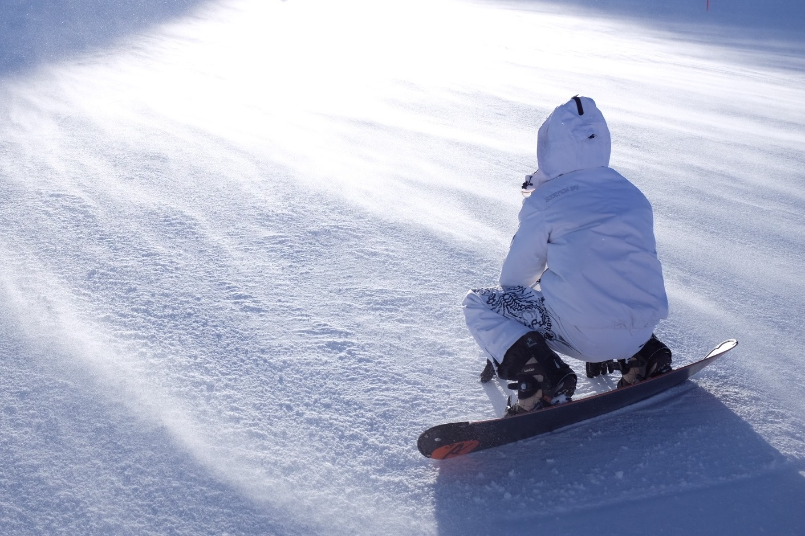
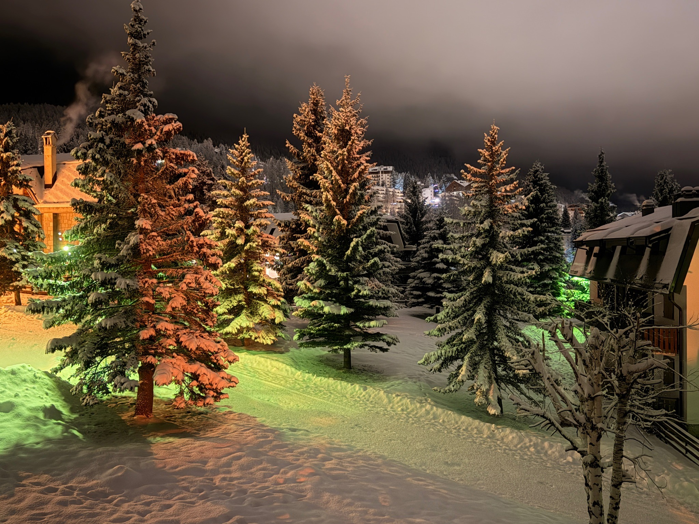
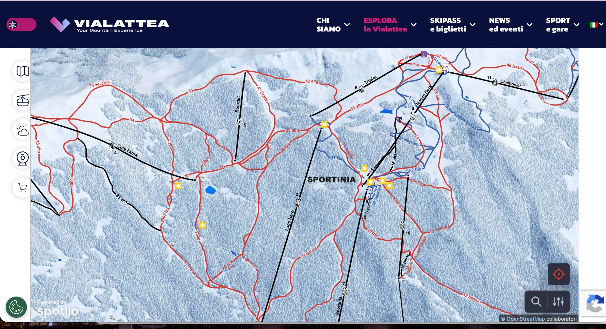
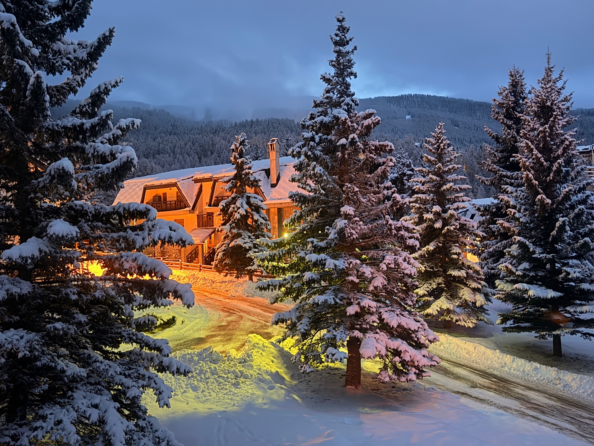
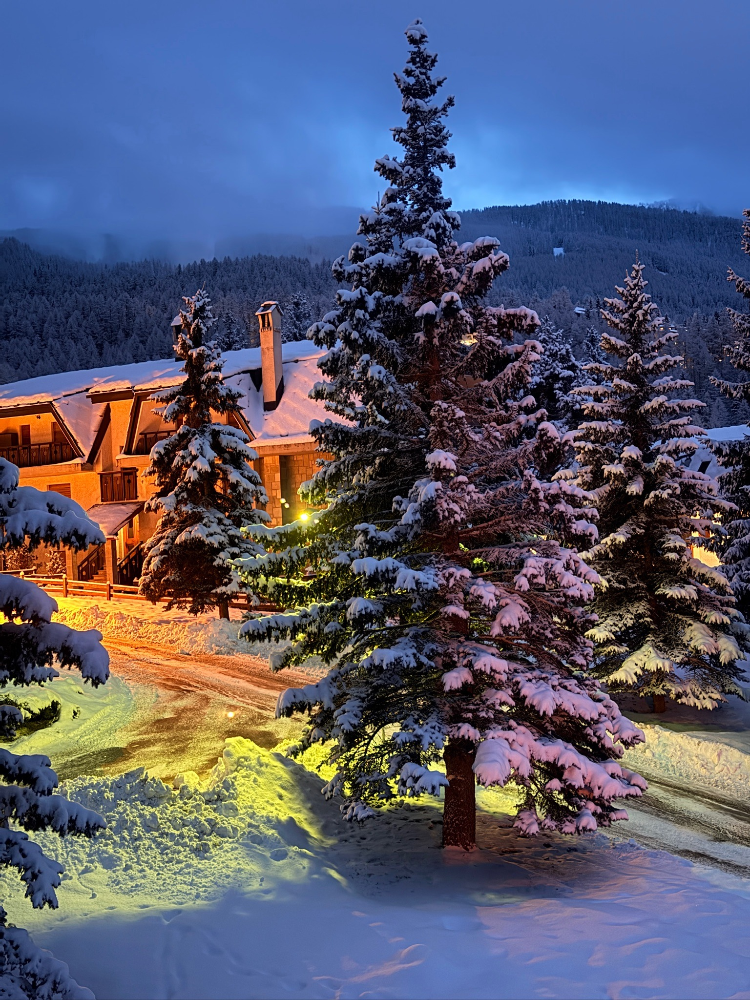
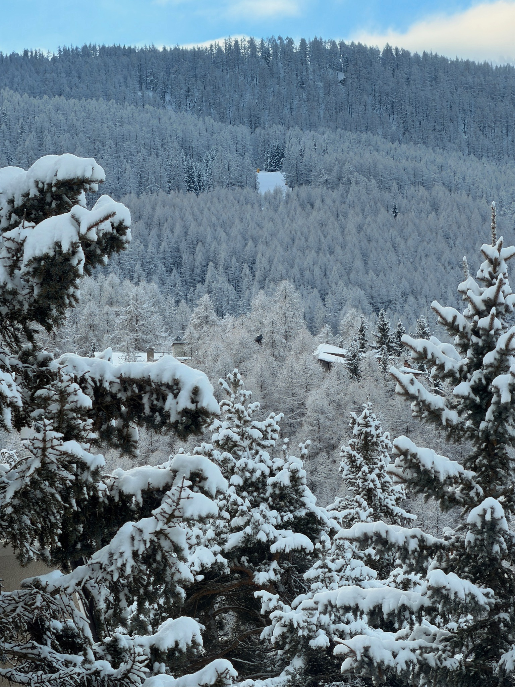
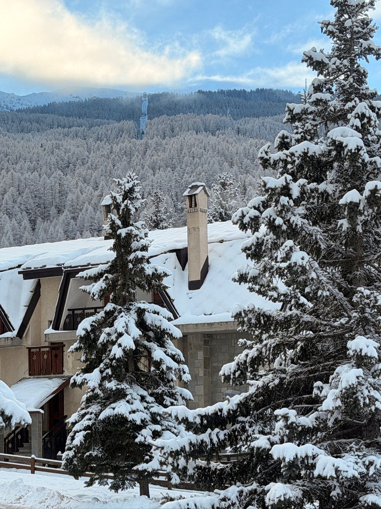
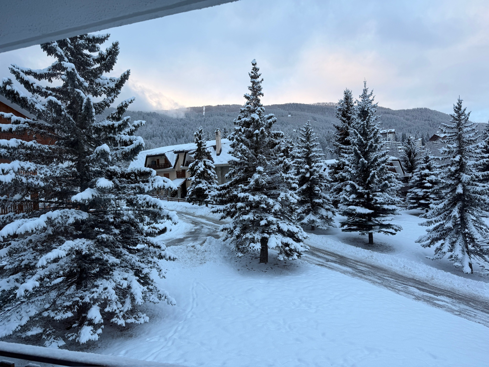

Navetta a circa 250 m
La fermata urbana è raggiungibile con un breve percorso pianeggiante da Grand Villard. Il servizio è a pagamento; orari e tariffe variano durante la stagione.
Sciare a Sauze, attraversare i larici verso Sportinia, rientrare con gli scarponi ad asciugare e la montagna ancora davanti alle finestre. Soft Wow Cabin è la nostra base per vivere la neve senza rinunciare al piacere di tornare a casa.

Una settimana bianca non è fatta soltanto di piste. È il ritmo delle mattine, l’attrezzatura pronta, la scelta di dove sciare, il rientro al caldo e il tempo che rimane dopo l’ultima discesa. Abbiamo organizzato Soft Wow Cabin proprio intorno a questo ritmo.

Queste sono le viste da Soft Wow quando arriva la neve: larici carichi, il bosco sopra Grand Villard, le luci della sera e Sauze poco più in là. Non serve aspettare di essere sulle piste per sentirsi in montagna.
La fermata urbana è raggiungibile con un breve percorso pianeggiante da Grand Villard. Il servizio è a pagamento; orari e tariffe variano durante la stagione.
A circa 2,8 km, con parcheggio gratuito, biglietteria e accesso alla seggiovia Jouvenceaux–Sportinia. È la soluzione che consigliamo quando si vuole partire subito con gli sci.
A circa 1,7 km, nel centro di Sauze. Un altro accesso comodo al comprensorio; il parcheggio in zona è a pagamento.
Sauze d’Oulx è una delle porte della Vialattea. Si può restare sulle piste di Sauze, salire verso Sportinia o, quando collegamenti e condizioni lo permettono, proseguire verso le altre aree del comprensorio. È questo che rende bella una settimana intera: non dover ripetere per forza la stessa giornata.

Esplora la mappa interattiva ↗Una piccola selezione di strumenti utili per decidere la giornata: condizioni, piste, navetta e alternative allo sci. I dettagli stagionali restano sulle fonti ufficiali, così qui trovi sempre la strada giusta senza trasformare la casa in un portale turistico.
Sauze, Sportinia, Clotes e alta quota: guarda com’è davvero la montagna prima di vestirti.
Apri le webcam ↗OGGIControlla previsioni e condizioni prima di scegliere quota, orario e programma.
Controlla il meteo ↗SCIMappa, comprensorio e collegamenti: scegli se restare a Sauze o allargare la giornata.
Esplora le piste ↗BUSLa linea Blu collega Gran Villard alla seggiovia Sportinia. Servizio a pagamento, orari stagionali.
Orari e tariffe ↗SLOWBoschi, neve e Gran Bosco: quando la giornata non deve per forza cominciare con gli sci.
Scopri i percorsi ↗PAUSAPranzo in quota, passeggiate, caffè, spa e idee per vivere Sauze anche senza sci.
Idee per la giornata ↗Informazioni operative, orari e condizioni possono cambiare durante la stagione. Per questo rimandiamo alle pagine ufficiali di Sauze d’Oulx.
Sci, caschi e scarponi restano fuori dall’appartamento, nella ski & bike room privata e chiusa del condominio. C’è una panca per cambiarsi, spazio per l’attrezzatura e un asciugascarponi Alpineheat. Le prese consentono anche la ricarica delle e-bike.
Dal blu del mattino alle luci calde della sera, il paesaggio entra nella casa e accompagna anche le ore senza sci.





Camera 140×190 cm · divano letto 140×200 cm · lettino da campeggio disponibile per un bambino piccolo.
Privato, accanto alla casa. Utile quando nevica e quando si parte presto.
Wallbox Ohme PRO Type 2 con cavo; ricarica inclusa nel soggiorno.
Accesso autonomo con Nuki + keybox. Check-in dalle 17:00, check-out entro le 10:00.
Più tranquillo del centro, che resta raggiungibile a piedi in circa 15 minuti su percorso sostanzialmente pianeggiante.
Cucina completa e il nostro piccolo rituale del caffè per le mattine prima delle piste e i rientri lenti.
Connessione veloce per lavorare, guardare un film o semplicemente organizzare la giornata successiva.
Soft Wow Cabin ospita fino a quattro persone a Grand Villard, con tutto ciò che serve per vivere Sauze e la Vialattea per più di un weekend.